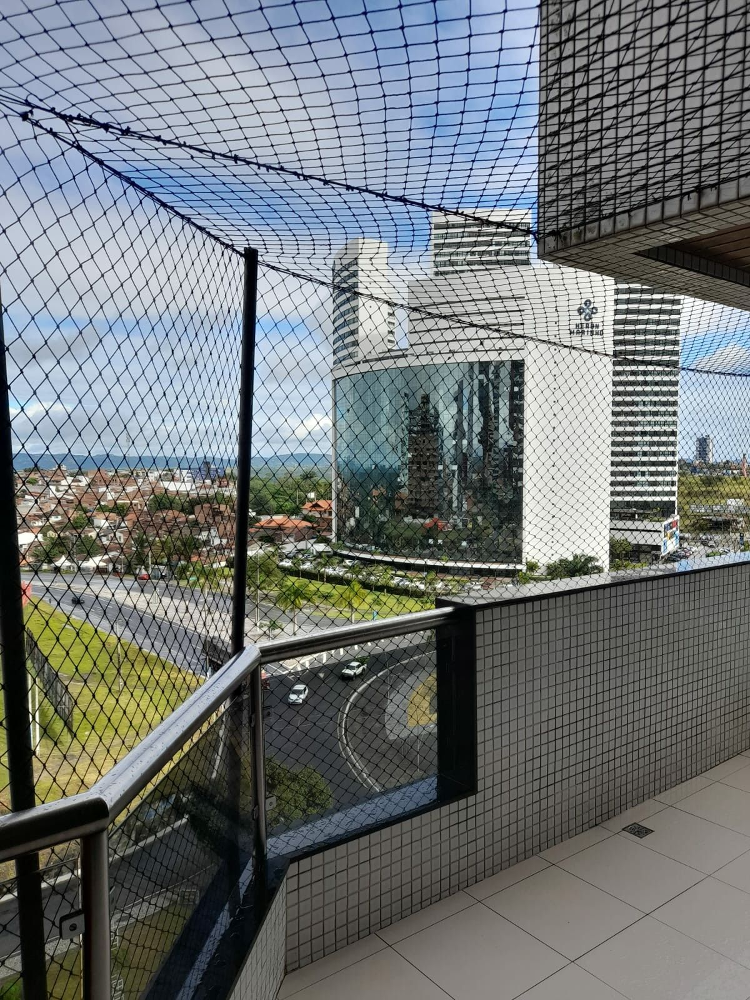
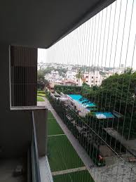

Protect workers, residents, pedestrians, and surrounding areas with professional construction safety net installation in Whitefield Bangalore. Our high-strength, durable nets help prevent falling debris, reduce accident risks, and ensure maximum safety for construction sites, apartments, and commercial buildings.
In addition to construction nets, we provide balcony safety nets, terrace nets, pigeon nets, cricket nets, swimming pool nets, invisible grills, and duct area nets across Whitefield and nearby areas, delivering comprehensive safety solutions for homes, apartments, commercial buildings, and industrial sites.
We use premium quality, UV-resistant, weatherproof materials that are capable of withstanding heavy loads, making them ideal for all types of construction environments in Whitefield Bangalore. Our construction safety nets are specially designed for high-rise buildings, scaffolding, industrial projects, and building sites, ensuring maximum safety for workers, residents, and surrounding areas. These high-strength nets effectively prevent falling debris, tools, and materials, reducing the risk of accidents on-site. In addition, we provide balcony safety nets, terrace nets, pigeon nets, cricket nets, swimming pool nets, invisible grills, and duct area nets across Whitefield and nearby areas, offering reliable, long-lasting safety solutions for homes, apartments, commercial buildings, and industrial projects.

Our construction safety nets significantly reduce the risk of falls and accidents, ensuring maximum safety for workers at building sites and high-rise projects.
Designed to stop tools, debris, and construction materials from falling, helping protect pedestrians, vehicles, and surrounding property.
Made with high-tensile, UV-resistant materials, our safety nets can withstand heavy loads and harsh weather conditions for long-term use.
Built to meet industry safety standards, our nets provide reliable performance for construction sites, scaffolding, and industrial applications.

Get a free site inspection for construction safety net installation for your building project, scaffolding, or industrial site. Our experts will assess your requirements and provide the best safety solutions to prevent falling debris and ensure worker protection.